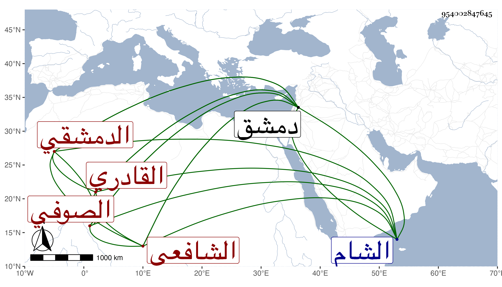

0902Sakhawi.DawLamic.ITO20230111-ara1.EIS1600.954002847645
Biography ID: 954002847645
725
أحمد الشهاب الأقباعي الدمشقي الصوفي القادري الشافعي . ولد في حدود سنة ثمانين وسبعمائة وأخذ عن مشايخ دمشق قبل الفتنة وسمع منهم وكذا أخذ عن الشيخ أبي بكر الموصلي ولزم النظر في الإحياء ومنهاج العابدين والدرة الفاخرة وغيرها من تصانيف الغزالي مع العبادة والتخلق بالأخلاق الشريفة حتى صارت له جلالة ووجاهة ولأهل الشام فيه ميزد اعتقاد وله فيها زاوية بها أصحاب ومريدون وكان أولا يخيط الأقباع ثم ترك . مات بدمشق في يوم الثلاثاء تاسع عشر شعبان سنة ثلاث وخمسين رحمه الله .
